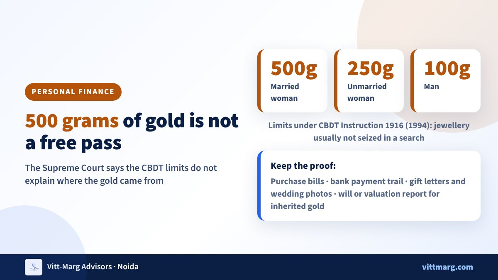

Most Indian families have heard the rule: a married woman can keep 500 grams of gold, an unmarried woman 250 grams and a man 100 grams. On 2 November 2026, in State of Bihar v. Phulpari Kumari, the Supreme Court made clear what that rule does and does not do. The limits only guide officers on what not to seize during a search. They do not prove that the gold was bought from explained money.

Where the gold limits come from
The limits are in CBDT Instruction No. 1916 of 11 May 1994. It tells income tax officers not to seize jewellery up to these limits during a search, even if the family cannot show its source on the spot.
| Family member | Jewellery usually not seized |
|---|---|
| Married woman | 500 grams |
| Unmarried woman | 250 grams |
| Male member | 100 grams |
A government press release of 1 December 2016 added that gold bought from disclosed income, exempt income such as agricultural income, reasonable household savings or legal inheritance is not taxed, whatever the quantity.
What the case was about
The case was a disproportionate-assets prosecution under the Prevention of Corruption Act against a public servant's wife. The Patna High Court had quashed the case, partly because her gold was within the permitted limits. The Supreme Court set that order aside and restored the case. It said that merely pointing to the circulars that allow gold to be kept does not account for how the gold was acquired. The trial will now decide the facts.
What it means for ordinary families
- The ruling does not make gold within 500 grams taxable, and it does not cap how much you may own.
- The court did not say every family must produce a purchase bill for every ornament. Wedding gifts and old family jewellery remain legitimate sources.
- What changes is the comfort level. If your income or source is ever questioned, the gram limit alone will not close the matter. Evidence will.
The proof worth keeping
| How you got the gold | Proof to keep |
|---|---|
| Bought it | Jeweller's bill with your PAN, and the bank or card payment record |
| Wedding gift | A simple list of gifts, wedding photos and, for large gifts, a gift letter from the giver |
| Inherited | The will, family settlement or a valuation report made at the time |
| Gift from a relative | A gift letter; gifts from relatives are not taxed |
If your income is above ₹50 lakh, the jewellery also has to be shown in the assets and liabilities schedule of your return, so the value you report should match these papers.
Tax on gold you receive or sell
- Gold received from relatives, on your marriage, or by inheritance is not taxed.
- Gold received from a non-relative is taxed if the total value of such gifts in a year is more than ₹50,000.
- On sale, gold held for more than 24 months gives long-term capital gain taxed at 12.5%. If held for less, the gain is added to your income and taxed at slab rates.
Free tools: check your tax with our income tax calculator (old vs new regime, FY 2026-27), and see every due date in the monthly compliance calendar.
Frequently asked questions
How much gold can a married woman keep at home in India?
There is no legal limit on owning gold. Under CBDT Instruction 1916, officers usually do not seize up to 500 grams for a married woman, 250 grams for an unmarried woman and 100 grams for a man during a search.
What did the Supreme Court say about gold limits in November 2026?
In State of Bihar v. Phulpari Kumari, decided on 2 November 2026, the court held that the CBDT gold limits do not by themselves account for how gold was acquired. The source still has to be explained when it is questioned.
Is inherited gold taxable?
No. Gold received by inheritance, on marriage, or as a gift from a relative is not taxed. Tax arises only when it is sold at a gain.
Do I need bills for all my gold?
Not for everything, but keep whatever proof you have: purchase bills, bank records, gift letters, wedding photos, or a will or valuation for inherited jewellery.
What is the tax on selling gold in 2026?
Gold held for more than 24 months is taxed as long-term capital gain at 12.5%. Gold held for less than 24 months is taxed at your slab rate.
How Vitt-Marg helps
We help individuals and families with income tax returns, AIS mismatches and notices. If you receive regular cash transfers or deposits and are not sure how they show in your tax records, talk to us before filing.
General information, current as of 22 November 2026, not advice for a specific case. Notifications and rules change often, so check with us before acting on it.